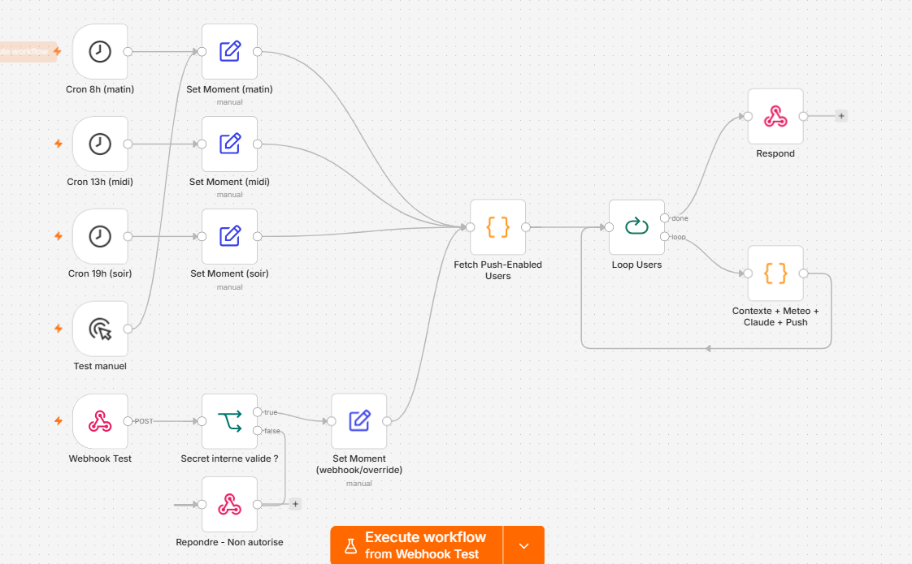

Orchestration n8n
Le briefing proactif, en coulisses
Schéma conceptuel
Déclenchement
8h / 13h / 19h
ou manuel
Utilisateurs
push-enabled
Boucle
1 utilisateur
Prompt
personnalisé
Claude Haiku
composition
Notification
push
(Expo)
boucle sur chaque utilisateur
Météo
open-meteo
lina-service
lieux / plats aimés
Implémentation dans n8n

-- / --